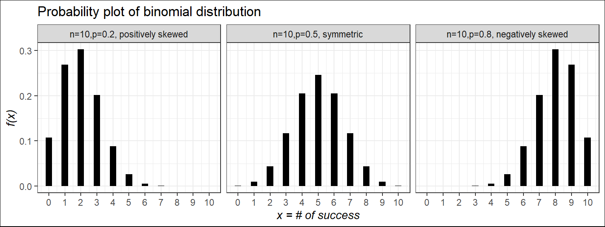

4 Some special discrete random variables
4.1 Bernoulli r.v
Bernoulli r.v comes from Bernoulli trial-a trial which has TWO possible outcomes (success or failure).
Consider the toss of a biased coin, which comes up a head with probability \(p\), and a tail with probability \(1 - p\). The Bernoulli random variable takes the two values 1 and 0, depending on whether the outcome is a head or a tail:
\[ X=1 ; if \ \ a \ \ head,\\ X=0 ; if\ \ a \ \ tail. \]
Then the PMF of \(X\) is:
- PMF:
\[ P(X=x)=f(x)=p^x(1-p)^{1-x}; \ \ x=0,1 \tag{4.1}\]
Mean: \(\mu=E(X)=p\)
Variance: \(\sigma^2 =E(X-\mu)^2=E(X^2)-\mu^2=p(1-p)\)
For all its simplicity, the Bernoulli random variable is very important. In practice, it is used to model generic probabilistic situations with just two outcomes, such as:
(a) The state of a telephone at a given time that can be either free or busy.
(b) A person who can be either healthy or sick with a certain disease.
(c) The preference of a person who can be either for or against a certain political candidate.
Furthermore, by combining multiple Bernoulli random variables, one can construct more complicated random variables.
Derivation of Mean and Variance of Bernoulli r.v
Mean:
\[E(X)=\sum_{x=0}^1 x\cdot f(x)=(0) f(0)+(1)f(1)=0+1\cdotp p=p\]
Variance:
\(Var(X)=E(X^2)-[E(X)]^2=p-p^2=p(1-p)\)
4.2 Binomial r.v
In a Binomial experiment , the Bernoulli trial is repeated \(n\) times with the following conditions:
a) The trials are independent
b) In each trial \(P(success)=p\) remains constant
Suppose \(X=number \ \ of \ \ successs \ \ in \ \ n\ \ trials\). Then \(X\) is called a Binomial r.v or follows Binomial distribution.
PMF: \[P(X=x)=f(x)=\binom {n}{x} p^x (1-p)^{n-x} ; x=0,1,2,...,n \tag{4.2}\]
CDF: \(P(X\le x)=F(x)=f(0)+f(1)+...+f(x)\)
Mean: \(E(X)=np\)
Variance: \(Var(X)=np(1-p)\)
We write \(X\sim Bin (n,p)\)
Illustration
- Consider an experiment of tossing a biased coin 3(number of trials, n) times.
- Tosses are independent, each toss has only TWO Outcomes-Head (Success) and Tail (Failure)
This type of trial is called the Bernoulli Trial
- Suppose, \(P(H)=p\) and remain constant in each toss, consequently, \(P(T)=1-p=q\) (let).
Suppose, \(X=\# \ \ of\ \ head\ \ (successes)\ \ in\ \ 3\ \ tosses\)
Now, what is the probability that, we will have exactly 2 heads (success) in 3 tosses?
That is, \(P(X=2)=?\)
Now, this can happen in the following ways:
\[P(X=2)=P(HHT)+P(HTH)+P(THH)\] \[=P(H)P(H)P(T)+P(H)P(T)P(H)+P(T)P(H)P(H)\] [Since tosses are independent]
\[=p.p.q+p.q.p+q.p.p\] \[=p^2 q+p^2 q+p^2 q=3p^2 q\] \[\therefore P(X=2)=\binom{3}{2}p^2q^{3-2}\] If, \(p=0.6\) is given, then we can easily compute \(P(X=2)=f(2)\). Now, if we repeat the toss 10 times \((n=10)\), with \(P(H)=p\), what is the value of \(P(X=3)=f(3)\)?
Note
\(n\) and \(p\) are said to be the parameters of the Binomial distribution.
\(f(x)=F(x)-F(x-1)\) i.e \(f(3)=F(3)-F(2)\)
If \(Y=number \ \ of \ \ failures\ \ in \ \ n\ \ trials\) then \(Y\sim Bin(n,1-p)\)
Relation between Bernoulli r.v and Binomial r.v
A Binomial Random Variable Is a Sum of Bernoulli Random Variables
Let, \(Y_i\) is a Bernoulli r.v appeared in \(i^{th}\) Bernoulli trial. If we conduct \(n\) independent Bernoulli trials then we have \(n\) independent Bernoulli r.vs such as \(Y_1, Y_2, ..., Y_n\). Each \(Y_i\) has values of either \(1\) or \(0\).
Now if \(X\) is a Binomial r.v then,
\[ X=Y_1+Y_2+...+Y_n =\sum_{i=1}^n Y_i \]
Derivation of Mean and Variance of Binomial r.v
From previous note, we know if \(Y_i\) is a Bernoulli r.v then
\(E(Y_i)=p\) and \(Var(Y_i)=p(1-p)\)
So, the mean of Binomial r.v that is
\[ E(X)=E(Y_1+Y_2+...+Y_n) \]
\[ =E(Y_1)+E(Y_2)+...+E(Y_n) \]
\[ =p+p+...+p=np \]
Now, the variance of \(X\) is:
\[ Var(X)=Var(Y_1+Y_2+...+Y_n) \]
\[ =Var(Y_1)+Var(Y_2)+...+Var(Y_n) \]
\[ =p(1-p)+p(1-p)+...+p(1-p)=np(1-p) \]
Probability plot of binomial r.v for different values of \(p\) and shape characteristics
Finding Binomial probability manually
Suppose, \(X\sim Binom(n,p)\); where \(n=5\) and \(p=0.6\). Find, (i) \(P(X=2)\) (ii) \(P(X \le 2)\) (iii) \(P(X\ge3)\).
Solution:
PMF of \(X\): \(P(X=x)=f(x)=\binom{5}{x} 0.6^x (0.4)^{5-x} \ \ ;x=0,1,2,...,5\)
(i) \(P(X=2)=f(2)=\binom{5}{2} 0.6^2 (0.4)^{5-2}=0.2304\)
(ii) \(P(X \le 2)=F(2)=f(0)+f(1)+f(2)=0.0102+0.0768+0.2304=0.3174\)
(iii) \(P(X \ge 3)=f(3)+f(4)+f(5)=0.6826\)
Alternative:(iii)
\(P(X \ge 3)=1-P(X< 3)=1-P(X \le 2)=1-F(2)=1-0.3174=0.6826\)
Finding Binomial probability using Binomial Table
In the end of any Statistics book there are some Probability Distribution Table. We can use these table to compute the required probability for specific values of the parameters of certain probability distribution. Here I share the 1st page of Binomial distribution table (Baron 2019).

Suppose, \(X\sim Binom(n,p)\); where \(n=5\) and \(p=0.6\). Find, (i) \(P(X=2)\) (ii) \(P(X \le 2)\) (iii) \(P(X \ge 3)\) using Table.
Solution:
(i) \(P(X=2)=f(2)=F(2)-F(1)=0.3174-0.0870=0.2304\).
(ii) \(P(X\le 2=F(2)=0.3174\)
(iii) \(P(X \ge 3)=1-P(X< 3)=1-F(2)=1-0.3174=0.6826\)
Exercise(Walpole et al. 2017)
5.9 In testing a certain kind of truck tire over rugged terrain, it is found that 25% of the trucks fail to complete the test run without a blowout. Of the next 15 trucks tested, find the probability that: (a) from 3 to 6 have blowouts; (b) fewer than 4 have blowouts; (c) more than 5 have blowouts.
Solution:
Let, X= number of trucks that have blowouts
Given, \(n=15; \ \ p=Pr(blowout)=0.25; \ \ q=1-p=0.75\). Hence, \(X\sim Binom(n=15, p=0.25)\), that is:
\[ P(X=x)=f(x)=\binom{15}{x}(0.25)^x (0.75)^{15-x}; x=0,1,2,...,15. \]
Now,
(a) \(P(3\le X\le 6)=f(3)+f(4)+f(5)+f(6)\)=0.225+0.225+0.165+0.092=0.707.
Alternative: \(P(3\le X\le 6)=F(6)-F(2)=0.943-0.236=0.707\) [from Table]
(b) \(P(X<4)=f(0)+f(1)+f(2)+f(3)\)=0.013+0.067+0.156+0.225=0.461.
Alternative: \(P(X< 4)=F(3)=0.461\) [from Table A2]
(c) \(P(X > 5)=1-P(X \le 5)=1-F(5)\)=0.148
5.12 A traffic control engineer reports that 75% of the vehicles passing through a checkpoint are from within the state. What is the probability that fewer than 4 of the next 9 vehicles are from out of state?
5.16 Suppose that airplane engines operate independently and fail with probability equal to 0.4. Assuming that a plane makes a safe flight if at least one-half of its engines run, determine whether a 4-engine plane or a 2-engine plane has the higher probability for a successful flight.
5.25 Suppose that for a very large shipment of integrated-circuit chips, the probability of failure for any one chip is 0.10. Assuming that the assumptions underlying the binomial distributions are met, find the probability that at most 3 chips fail in a random sample of 20.
Exercise(Montgomery and Runger 2014)
3-93 Let \(X\) be a binomial random variable with \(p = 0.1\) . and \(n = 10\). Calculate the following probabilities from the binomial probability mass function and from the binomial table in Appendix A and compare results. (a) \(P(X\le 2)\) (b) P(X>8) (c) P(X = 4) (d) \(P(5 \le X \le7)\)
3-115 The probability that a visitor to a Web site provides contact data for additional information is 0.01. Assume that 1000 visitors to the site behave independently. Determine the following probabilities: (a) No visitor provides contact data. (b) Exactly 10 visitors provide contact data. (c) More than 3 visitors provide contact data
Exercise(Baron 2019)
3.21. A lab network consisting of 20 computers was attacked by a computer virus. This virus enters each computer with probability 0.4, independently of other computers. Find the probability that it entered at least 10 computers.
3.22. Five percent of computer parts produced by a certain supplier are defective. What is the probability that a sample of 16 parts contains more than 3 defective ones?
And so on….
4.3 Poisson r.v
The number of events occur randomly in an interval or in a region usually follows Poisson distribution. A famous French mathematician SimB4eon-Denis Poisson (1781–1840) first introduced this distribution.
Example
The Poisson distribution may be useful to model variables like:
- The no. of calls arrive at a customer care in 15 minites
- The no. of arrivals at a car wash in one hour
- The no. of repairs needed in 10 miles of highway
- The no. of leaks in 100 miles of pipeline etc.
Usually Poisson distribution is used to evaluate probability of “Rare” event.
The probability mass function of the Poisson random variable \(X\), representing the number of outcomes occurring in a given time interval denoted by \(t\), is:
- PMF:
\[ P(X=x)=f(x)=\frac{e^{-\lambda t}(\lambda t)^x}{x!}; \ \ x=0,1,2,...,\infty. \tag{4.3}\]
Here, \(\lambda\) is called arrival rate or average number of occurrences in long-run. And only parameter of Poisson distribution.
Mean: \(\mu=E(X)=\lambda t\)
Variance: \(\sigma^2 =\lambda t\)
We write: \(X\sim Pois(\lambda t)\)
N.B: The mean and variance of Poisson random random variable are identical. This is the unique property of Poisson r.v.
Probability of plot of poisson r.v for different values of \(\lambda\) (for a fixed interval \(t=1\))

We can see that, for small \(\lambda\) the distribution of Poisson r.v is positively skewed and as the value of \(\lambda\) increases the distribution tends to symmetry.
Finding Poisson probability
Consider a discrete r.v say \(X\sim Pois(\lambda t)\). Suppose, \(\lambda =1.5\) and \(t=2\). Find, (i) P(X=4) (ii)\(P(X \le 2)\) (iii) \(P(X\ge3)\).
Solution:
PMF of \(X\): \(P(X=x)=f(x)=\frac{e^{-\lambda t}(\lambda t)^x}{x!}; x=0,1,...,\infty.\)
(i) For \(t=2\) , \(\mu=\lambda t=1.5*2=3\).
So, \(P(X=4)=f(4)=\frac{e^{-3}(3)^4}{4!}=0.1680\)
(ii) \(P(X\le2)=\sum_{x=0}^{2}f(x)=\sum_{x=0}^{2}\frac{e^{-3}(3)^x}{x!}=e^{-3}[\frac{3^0}{0!}+\frac{3^1}{1!}+\frac{3^2}{2!}]=0.4232\)
(iii) \(P(X \ge 3)=1-P(X< 3)=1-P(X\le 2)=1-0.423=0.5768\)
Finding Poisson probability using Table
We can use Poisson distribution table to compute Poisson probabilities. Here I share the 1st page of Poisson distribution table (Baron 2019).

Consider a discrete r.v say \(X\sim Pois(\lambda t)\). Suppose, \(\lambda =1.5\) and \(t=2\). Find, (i) \(P(X \le 2)\) (ii)P(X=4)
Solution by using Table:
For \(t=2\) , \(\mu=\lambda t=1.5*2=3\).
(i) \(P(X \le 2)=F(2)=0.423\)
[For x=2 and \(\mu \ \ or \ \lambda =3\); corresponding probability in Table A3 is 0.423]
(ii) \(P(X=4)=f(4)=F(4)-F(3)=0.815-0.647=0.168\)
Example 5.17:(Walpole et al. 2017) During a laboratory experiment, the average number of radioactive particles passing through a counter in 1 millisecond is 4. What is the probability that 6 particles enter the counter in a given millisecond?
Example 5.18:(Walpole et al. 2017) Ten is the average number of oil tankers arriving each day at a certain port. The facilities at the port can handle at most 15 tankers per day. What is the probability that on a given day tankers have to be turned away?
Example 3.8:[(Pishro-Nik 2014)] The number of emails that I get in a weekday can be modeled by a Poisson distribution with an average of 0.2 emails per minute.
What is the probability that I get no emails in an interval of length 5 minutes?
What is the probability that I get more than 3 emails in an interval of length 10 minutes?
Solution
Let, \(X\)=number of emails that I get in a given interval.
Given, \(\lambda =0.2 \ \ min^{-1}\).
\(X\) will follow \(Pois(\lambda t)\)
1. In this case \(\mu=\lambda t=0.2*5=1\). So, \(P(X=0)=f(0)=e^{-\mu}=e^{-1}=0.3679\).
2. In this case \(\mu=\lambda t=0.2*10=2\). So,\(P(X>3)=1-P(X\le 3)=1-F(3)=1-0.857=0.143\). [From Table A3]
Approximation of Binomial Distribution to Poisson
When,
\(p \rightarrow0\) (Success rate is very low);
\(n\rightarrow \infty\) (Number of trials is very large);
Then Binomial distribution can be approximated by Poisson distribution.
- Mathematically, \(Binom (x; n,p)\approx Pois(\lambda)\); where \(\lambda=np\).
N.B: In practical situation if \(n \ge 30\) and \(p\le 0.05\) ;hence \(q\ge 0.95\),then the approximation is close enough to use the Poisson distribution for binomial problems(Baron 2019).
Example 5.20:(Walpole et al. 2017) In a manufacturing process where glass products are made, defects or bubbles occur, occasionally rendering the piece undesirable for marketing. It is known that, on average, 1 in every 1000 of these items produced has one or more bubbles. What is the probability that a random sample of 8000 will yield fewer than 7 items possessing bubbles?
Solution:
Let,\(X=number\ \ of \ \ glasses\ \ possesing\ \ bubbles\)
Given, \(Pr(buuble \ \ occurs)=p=1/1000=0.001\) which is less than \(0.05\), and \(n=8000\) which is greater than \(30\). So, the PMF of \(X\) can be approximated by Poisson distribution with
\[\lambda =np=8000*0.001=8\] that is \(X\sim Pois (\lambda=8)\)
According to question,
\(P(X<7)=f(0)+f(1)+...+f(6)=F(6)=0.313\) (Ans.)
[By using Table A3]
Exercise 5.87:(Walpole et al. 2017) Imperfections in computer circuit boards and computer chips lend themselves to statistical treatment. For a particular type of board, the probability of a diode failure is 0.03 and the board contains 200 diodes.
- What is the mean number of failures among the diodes? (Ans: \(\mu=np=200*0.03=6\))
- What is the variance?(Ans: \(\sigma^2=np(1-p)=200*0.03*(1-0.03)=5.82\))
- The board will work if there are no defective diodes. What is the probability that a board will work? Ans (c): The board will work if there are no defective diodes. So, P(The board will work)=\(P(X=0)=f(0)=e^{-\mu}=e^{-6}=0.0025\).